Enage (Mobile UI)
For my HCDE Capstone Project I joined up with some like-minded individuals to try and see what we could do to address the current political problems in our country. We worked hard to make something that would encourage young liberal people to become more engaged in the political system. We ended up designing a mobile UI as a touchpoint for a system that would use issue based teams and gamification to motivate political action. In hindsight, I have realized we made some big mistakes in how we scoped our project. The nature of the political problem in our country are just so massive an complex. Even though this project did not go the way that I would have hoped, I learned A LOT from this project. The visual design and branding ended up really fun, the partnership with the DNC was very informative, and ultimately I think the path we pursued would eventually be fruitful. However, we ran out of time and were unable to test to see if our final design would have worked.
Goals: To create a mobile UI system that would help young liberals engage with the American political system.
Constraints: Ten week timeframe, unexpected security constraints, citizen apathy.
Outcomes: A valid attempt at solving a massive problem utilizing DNC party data, issue-based teams, and gamification. Though we were unable to test the validity of our final project, we were able to leave our design assets and research in the hands of the WA State Democrats and their newly formed tech coalition.
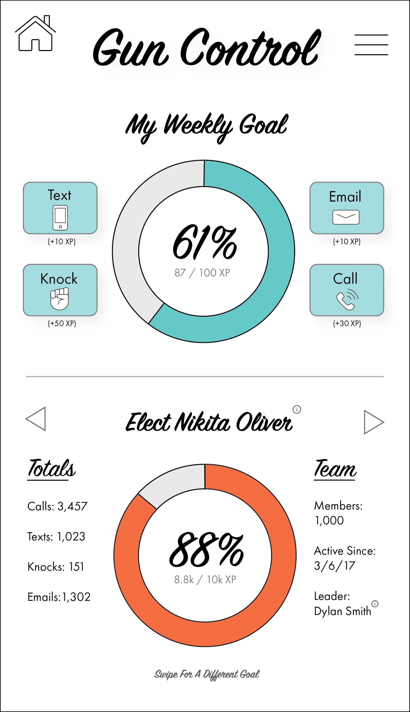
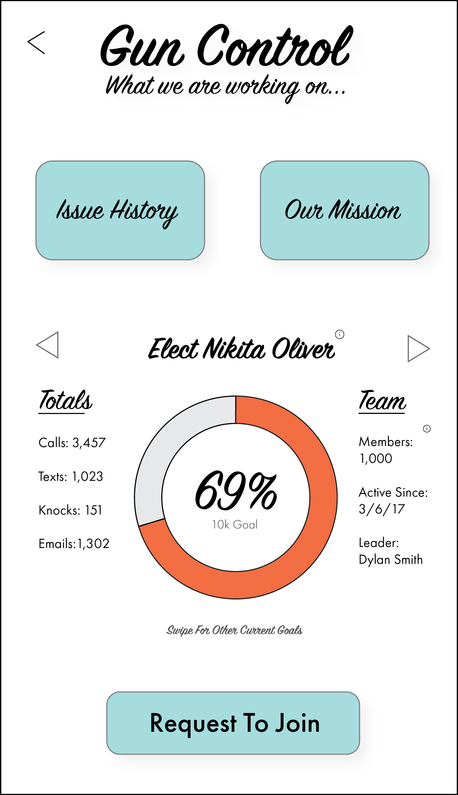
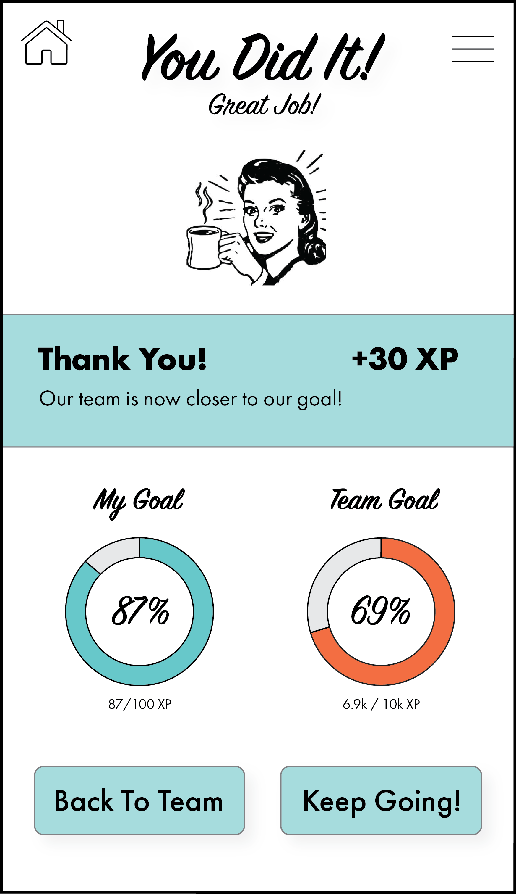
Goals: To create a mobile UI system that would help young liberals engage with the American political system.
Constraints: Ten week timeframe, unexpected security constraints, citizen apathy.
Outcomes: A valid attempt at solving a massive problem utilizing DNC party data, issue-based teams, and gamification. Though we were unable to test the validity of our final project, we were able to leave our design assets and research in the hands of the WA State Democrats and their newly formed tech coalition.
Research and Concept: The original idea for this project was to attempt to create a system that would help young Americanss become more engaged with the political system. We conducted open-ended interviews to help define engagement aand begin investigating what is missing from the polical experience that prevents engagement.
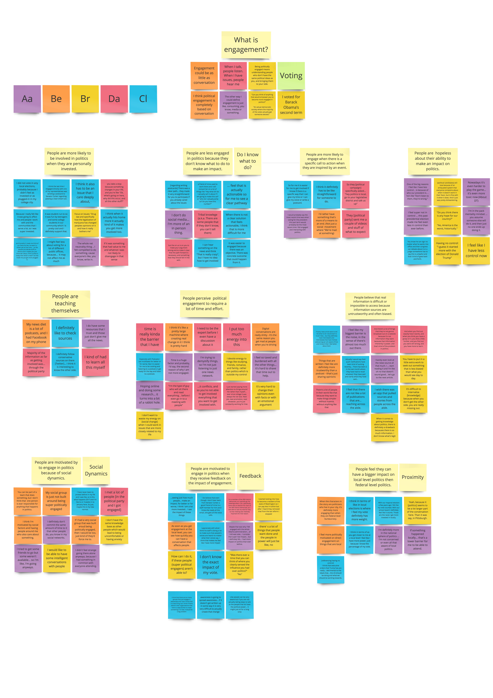
Pivot and Sponsorship: During a poignant conversation with a mentor we realized something important. We were proceeding down our project with a very liberal bias while claiming to be designing for all young Americans. To continue with integrity we resolved to only design for liberals, this allowed us to design more effectively while staying true to our values. The pivot towards a liberal design actually opened the door to partner with the WA State Democrats. Throughout the rest of the project we worked in conjunction with the Director of Organization for the WA State Democrats. He was able to give us valuable information about how we would access party data, what types of engagements work best, and general guidance on how to naviagte the realm of politics.
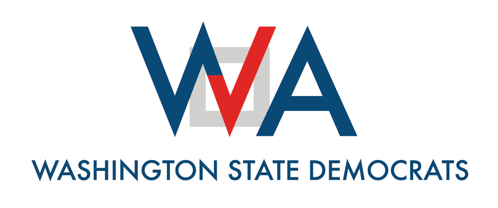
Storyboard, Personas, and Prototyping: We employed a highly user-centered design process beginning with creating personas to empathize with our users. Keeping our personas in the forefront of our minds we proceeded with a group brainstorming session to explore all of the possible solutions. After settling on a team-based organizational system we began to formulate our design plan. It was at this point that we realized that a mobile application would make the most sense for our design as we wanted to nudge towards making phone calls. We created storyboards to communicate the ideal user experience of our different brainstorm concepts. In conjunction with our storyboards we began developing a paper prototype of our mobile UI design.
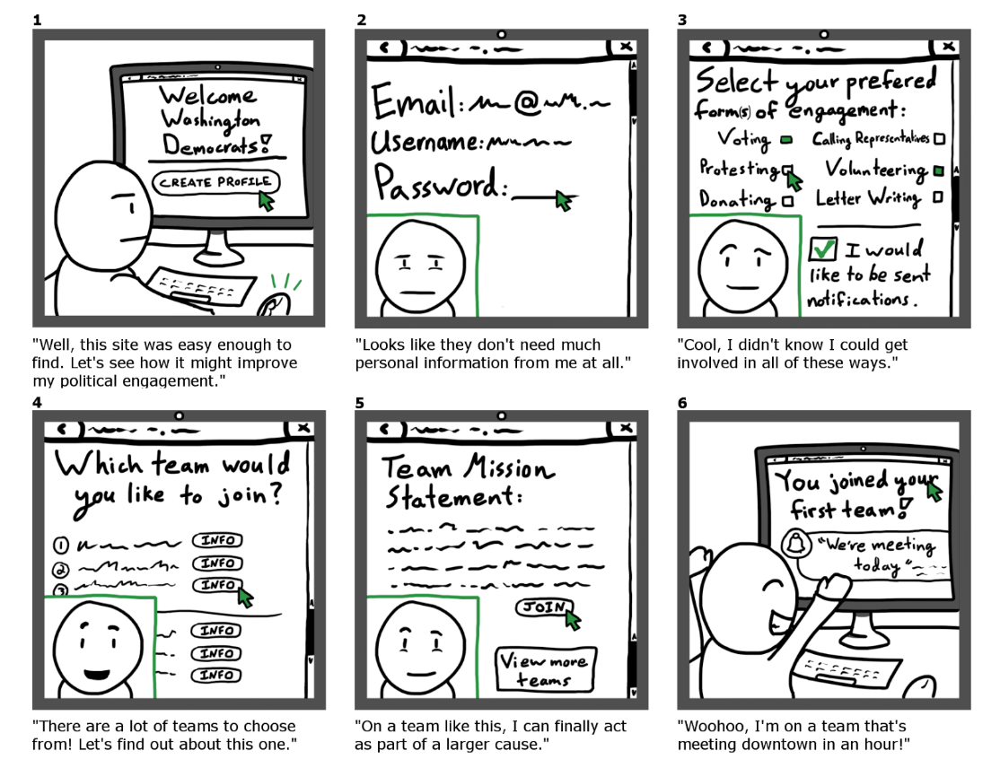

Lo-Fidelity Prototype and Usability Testing: After creating our paper prototypes and storyboards we moved to a digital medium. We created a lo-fidelity interactive prototype in Axure. Once we had our interactive prototype we put it in the hands of potential users and tested both the conept and usability of the app. At this point we learned that the app both felt that, although it was usable, most of the users would probably not use it because it was "sketch" and un-fun. As a result of the research we began to redesign the UI with a focus on making it more engaging through visual design, gamification, and to control the experience more to prevent security issues.
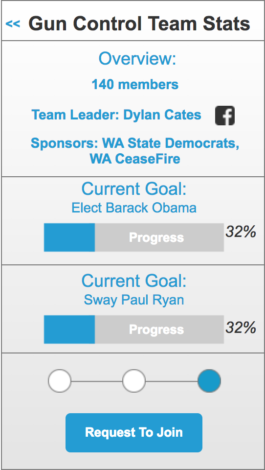
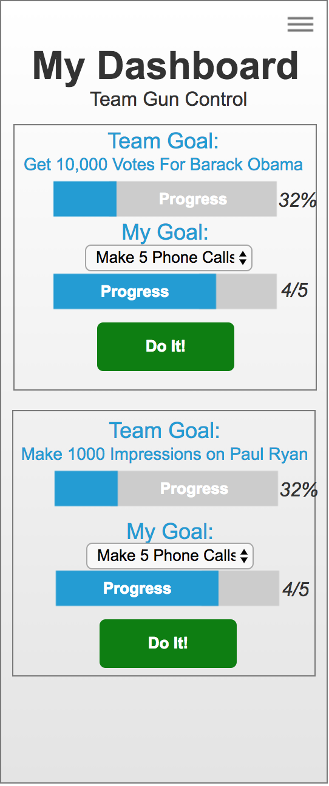

Hi-fidelity Prototype: This part of the project was where I got to practice the most. As the only person on the team with visual design chops I was able to explore an exciting brand idea. I decided to go with a 1950's Americana branding that would be both visual engaging and tounge and cheek enough to appeal to young people. I was inspired by the post-apocalyptic Americana branding from the game Fallout. I feel really good about the visual design of this project, it was a great opportunity to explore a unique branding idea.
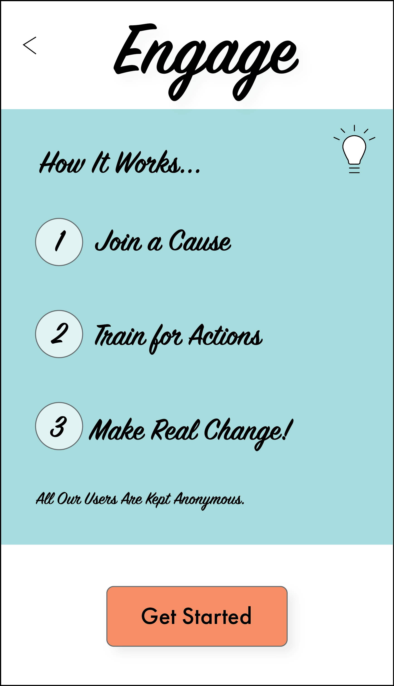
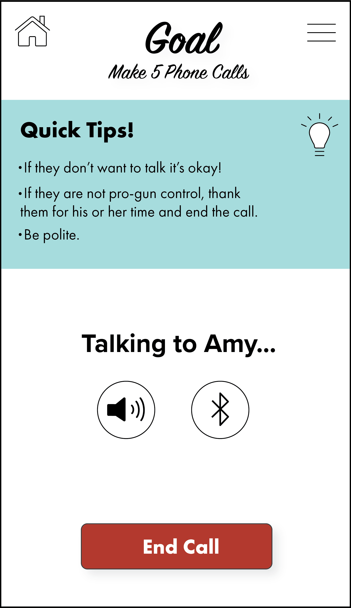
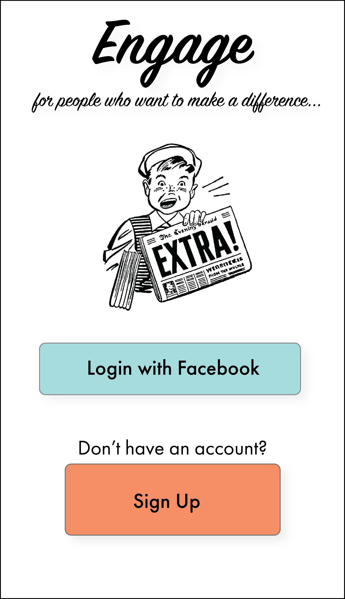
This is the poster I made to present our project at the HCDE Capstone Fair.